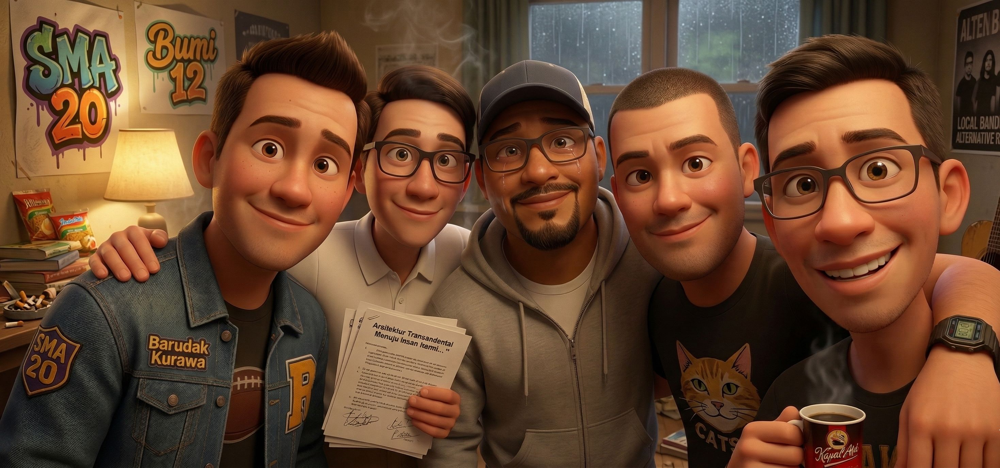

Persahabatan, Caci Maki, dan Pencarian Mursyid Terakhir
"Anjing lah, si Pak Haji mah bener-bener hayang urang gelo!" umpat Fahri. Dia melempar korek api ke arah Deni. "Tugas naon ieu, Med? Kita disuruh nyari 'Guru Mursyid' di zaman yang isinya konten TikTok goyang-goyang kabeh? Maneh mah cicing wae dari tadi, goblok!"
Medy menarik napas panjang. Dia menatap Fahri, si hothead SMAN 20 yang ototnya lebih cepat kerja daripada sel sarafnya. "Sabar atuh, Ri. Urang ge puyeng. Tapi dengerin, ini tugas akhir PKN plus Agama. Kalau urang-urang nggak dapet esensinya, Pak Haji nggak bakal ngelulusin kita. Manusia Insan Kamil, itu tujuannya."
Iman, yang biasanya paling sok alim di antara mereka, mencoba menengahi sambil membetulkan letak kacamatanya. "Gini, Ri. Lu baca halaman dua. Musa aja yang nabi kudu sabar sama Khidr. Lu yang cuma ampas cilok masa mau emosi terus? Ini soal adab. Al-Ghazali bilang, kita itu harus milih mau jadi golongan yang mana. Ada Faizin, Mukhatirin, atau Halikin."
"Halikin bapak maneh!" Barceu menimpali dari arah pintu sambil membawa nampan berisi kopi saset. "Urang nyaho maksud maneh, Man. Maneh mau bilang urang semua ini golongan 'Halikin' kan? Yang celaka gara-gara ilmu cuma buat gaya-gayaan? Lu sendiri apa? Lu itu 'Ulama Su' versi SMA! Ngomongin dalil tapi kemarin malem lu yang paling kenceng nyolong wifi masjid buat download bokep!"
Kamar Medy mendadak hening. Iman mukanya merah padam. Deni cuma bisa geleng-geleng kepala sambil memetik senar gitar akustiknya yang sumbang. Konflik ini bukan cuma soal tugas, tapi soal luka lama yang selalu mereka tutupi dengan tawa keras di kantin sekolah.
Deni berhenti memetik gitar. "Udah lah, jing. Gini aja. Kita bedah satu-satu. Di teks ini disebutin soal pembersihan hati. Takhalli, Tahalli, Tajalli. Urang ngarasa, persahabatan kita ini isinya daki semua. Gimana mau nemu 'Guru Mursyid' kalau hati kita masih penuh sampah?"
Fahri berdiri, menendang tumpukan bantal. "Bacot! Lu semua sok suci. Lu tau kenapa gua marah? Karena gua ngerasa kita ini nggak punya arah. Medy, lu yang katanya ketua geng, lu pernah nggak sekali aja dengerin curhatan gua soal pacar gua yang mabok terus? Nggak kan? Lu cuma peduli sama status 'anak gaul Bandung' lu itu!"
Medy terdiam. Dia menatap teks tentang Syekh Abdul Qadir al-Jilani yang menyebutkan bahwa seorang guru harus punya kasih sayang laksana ayah kepada anaknya. Dia merasa gagal. Dia bukan guru, tapi dia adalah 'pemimpin' bagi mereka berempat. "Ri... urang nggak tahu kalau itu yang maneh rasain."
"Ya emang nggak tahu, karena maneh mah sibuk sama diri sendiri, anjing!" Fahri meludah ke lantai. "Gua keluar. Tugas ini kerjain aja sendiri sama si Iman yang munafik itu."
Pintu kamar dibanting. Bunyinya mengalahkan petir yang menggelegar di langit Turangga. Barceu meletakkan kopi dengan kasar. "Tuh, denger kan? Itu yang namanya 'Cermin Hati' yang dibilang Syekh Abdul Qadir. Hati si Fahri itu lagi pecah, dan kita semua cuma nambahin debunya."
Iman tertunduk. "Bar, gua minta maaf kalau gua kelihatan sok suci. Gua cuma... gua takut. Gua takut kalau kita lulus, kita bakal jadi orang-orang yang Al-Ghazali sebut sebagai 'Halikin'. Orang-orang yang pinter tapi jiwanya dikuasai setan ego."
Deni menarik kursi, mendekat ke meja Medy. "Med, inget bagian Ibn Arabi soal Insan Kamil? Manusia yang seimbang. Jalal dan Jamal. Keagungan dan Keindahan. Selama ini kita cuma ngejar 'Jamal'-nya doang. Kerennya doang, asiknya doang. Kita lupa 'Jalal'-nya. Prinsip, tanggung jawab, dan saling jaga. Kita butuh Mursyid, tapi mungkin Mursyid itu bukan orang jauh. Mungkin Mursyid itu adalah kejujuran di antara kita."
Medy menatap fotokopi itu lagi. Di sana tertulis: "Barangsiapa mengenal dirinya, maka ia mengenal Tuhannya." Dia sadar, selama ini dia tidak mengenal teman-temannya. Dia cuma mengenal topeng-topeng mereka di sekolah.
"Kejar si Fahri, Cep!" perintah Medy pada Barceu. "Bawa dia balik. Bilang sama dia, urang mau dengerin ceritanya. Semua ceritanya. Kita mulai proses 'Takhalli' kita hari ini. Kita bersihin semua benci, semua rahasia, semua anjing-anjingan ini biar jadi sesuatu yang bener."
Barceu nyengir, "Gitu dong, goblog. Dari tadi napa." Dia segera lari menembus hujan.
Sepuluh menit kemudian, Fahri kembali dengan baju basah kuyup, diseret oleh Barceu. Dia duduk di tengah lingkaran dengan muka masih masam, tapi matanya basah—bukan cuma karena air hujan. Medy menyerahkan handuk, lalu duduk lesehan di lantai bersama mereka semua.
"Ri, gua minta maaf. Gua emang pemimpin yang tolol," kata Medy pelan. "Gua baca di sini, katanya seorang murid harus menyerah total kayak mayat di tangan orang yang memandikannya. Gua nggak minta lu jadi mayat, tapi gua minta lu percaya sama kita. Kita ini satu silsilah, silsilah tongkrongan SMA 20. Kalau satu jatuh, semua harus narik."
Fahri terisak. "pacar gua si anis minta putus, Med. Gua bingung kudu gimana. Gua nggak punya pegangan. Pas baca soal 'Guru Mursyid' ini, gua ngerasa makin hina. Gua ngerasa nggak pantes punya pembimbing karena hidup gua berantakan."
Iman merangkul bahu Fahri. "Justru itu, Ri. Al-Ghazali bilang ilmu itu kayak air, dia cuma ngalir ke tempat yang rendah. Kalau lu ngerasa rendah dan hancur sekarang, itu tandanya cahaya mau masuk. Kita semua rusak, Ri. Lu pikir gua nggak ngerasa berdosa tiap kali pura-pura jadi anak baik di depan nyokap?"
Deni kembali memetik gitarnya. Kali ini nadanya lebih tenang, lebih harmonis. "Ternyata bener ya kata Ibn Arabi. Manusia itu mikrokosmos. Di dalam diri kita ada semesta. Ada amarah lu, ada kemunafikan Iman, ada ketololan Medy, ada bacotan Barceu. Semuanya harus seimbang biar jadi Insan Kamil."
Hujan di luar mulai mereda, menyisakan aroma tanah basah yang menenangkan. Cahaya lampu kamar Medy yang tadinya terasa remang dan menyebalkan, kini terasa lebih hangat. Mereka mulai membedah tugas itu bukan lagi sebagai beban akademis, tapi sebagai panduan untuk memperbaiki hidup mereka yang morat-marit.
"Oke," Medy memutus keheningan yang emosional itu. "Sekarang kita tulis laporannya. Kita pake bahasa kita sendiri. Kita bilang ke Pak Haji kalau Guru Mursyid itu bukan cuma orang bersorban yang duduk di atas mimbar. Guru Mursyid itu adalah siapapun atau apapun yang bisa bikin kita ngaca dan ngelihat betapa busuknya kita, lalu nuntun kita buat mandi dan jadi bersih lagi."
"Dan jangan lupa tulis," tambah Barceu sambil menyulut rokoknya yang tadi sempat basah, "Kalau persahabatan anak SMA 20 itu adalah 'Tarekat' yang paling keras. Gurunya adalah kenyataan, zikirnya adalah kejujuran, dan surga-nya adalah saat kita bisa ketawa bareng tanpa ada yang perlu ditutup-tutupi lagi."
Mereka tertawa serempak. Fahri akhirnya tersenyum, meski matanya masih merah. Malam itu di Turangga, sebuah kamar kecil menjadi saksi transisi lima remaja dari 'Halikin' yang nyaris celaka menjadi 'Mukhatirin' yang berani bertaruh demi kebenaran sebuah rasa. Mereka mungkin masih jauh dari kata 'Insan Kamil', tapi setidaknya, cermin hati mereka malam itu sudah mulai digosok, perlahan-lahan, hingga debu-debu caci maki itu rontok satu per satu.
Deni memetik kunci C mayor yang jernih. "Anjing lah, kita jadi puitis gini gara-gara tugas. Pak Haji emang sakti."
"Emang sakti, goblok!" sahut Medy, disambut tawa pecah yang menggema hingga ke ujung jalan Turangga yang mulai sepi.